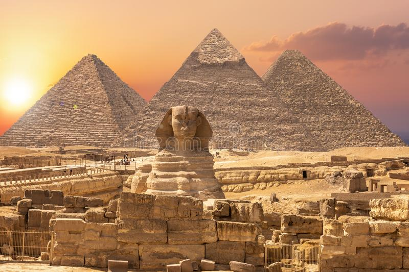

Notes
Discourse on Decadence
-
this ability allows Elrick
to read people's minds if they verbally
respond to him
Navigation
Social Media


Iteru
- Iteru is one of the later destinations of the heroes, where they have to gather the world leaders to stop the disaster from ocurring.
- A very old nation that has conquered and resisted conquerors is still led by it's Pharaoh, being one of the oldest nations that still has accurate records of the ancient times.
- Their Pharaoh is their leader, a literal demigod with the power over the sun, the heroes must ask for his aid in order to avoid the nightime disaster that spawn shadow creatures.
- Elrick is a government worker in the royal palace of Iteru's Pharaoh, he's the first to notice that the Vizier and priests are plotting something.
- The only reason he happens to be in the palace is so that his "Discourse On Decadence" can protect the Pharaoh and the princes.
- He happens to be a race of beastfolk reffered to as Therian which are anthropomorphic canines, which makes it odd for him to be in Iteru as Therians are not natives there.
Trivia
- Being a desert nation, one would expect it's population to be low. However, due to the great river that passes through the desert, they are able to sustain a remarkably large population.
- Iteru is the leading nation when it comes to trading by land in the Indessan continent thanks to their extensive camel routes.
- The country historically is protected by beings known as Anubisaths, who resemble our idea of Egyptian gods. Their blood is made of liquid gold, and they are much stronger than humans, which makes it challenging to invade Iteru.
Copyright Tan-9Sodium